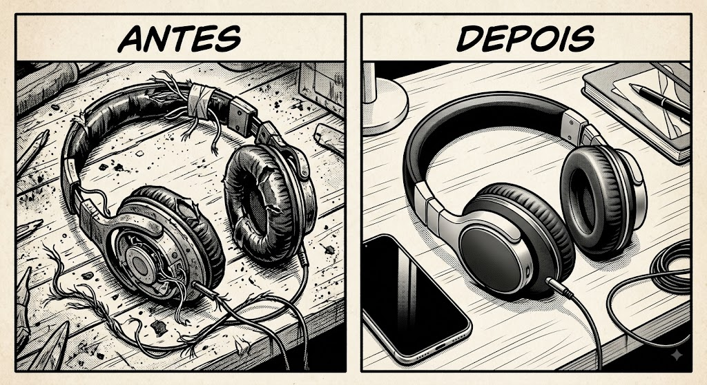
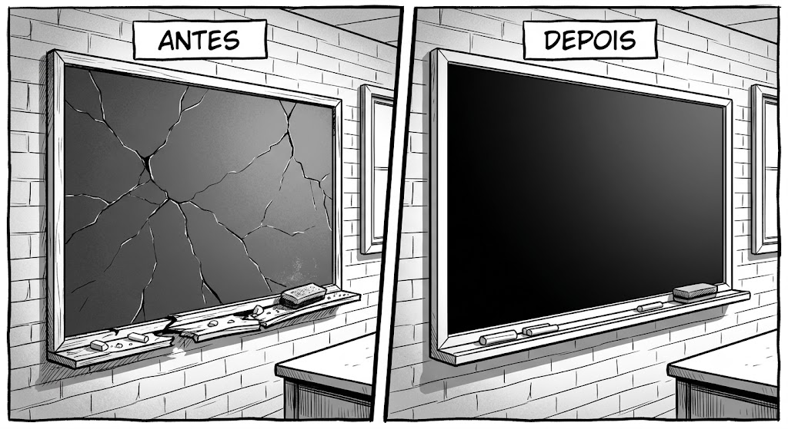
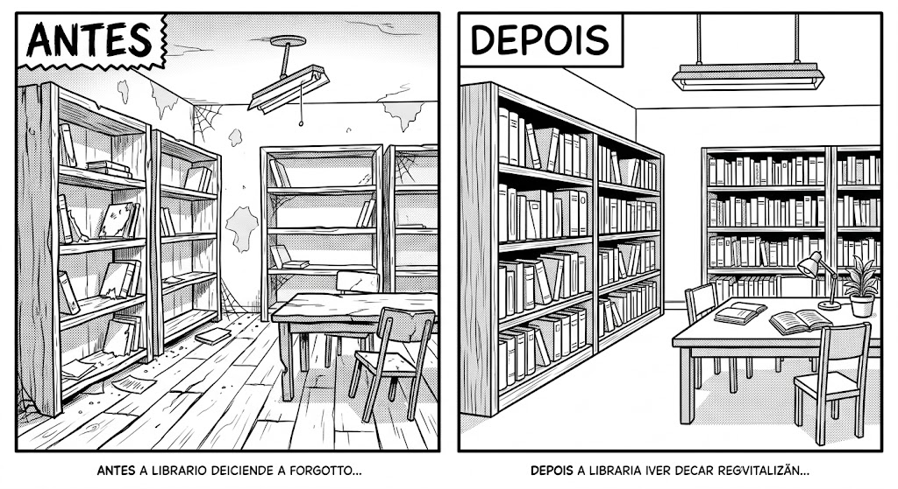

O que devemos fazer para nossa escola Melhorar?
Transformando nossa escola, construindo nosso futuro!
Veja como pequenas mudanças fazem uma grande diferença na nossa educação.
O que devemos fazer para nossa escola Melhorar?
Veja como pequenas mudanças fazem uma grande diferença na nossa educação.







— Jean Lucas, Aluno do 1º Ano A